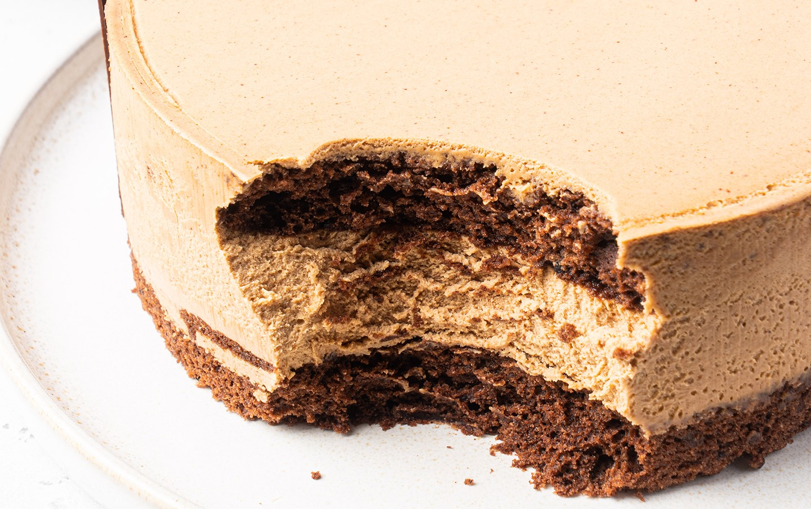

приготовление:
-
Начнём с коржей, это будет шоколадный дакуаз. В чаше взбейте белки (135 гр.) и сахар сорта демерара (120 гр.) до уверенных пиков. Все сухие ингредиенты (мука фундучная — 105 гр., мука — 20 гр., какао-порошок — 21 гр.) просыпать через сито и объедините силиконовой лопаткой с белковой массой. Оберните плотной фольгой два металлических кольца на 14-16 см. Поделите тесто пополам (примерно 150-160 граммов на кольцо). Распределите лопаткой. Выпекать на 165 градусах. Бисквиты будут пружинить, но останутся слегка мягкими. У меня примерно 25 минут ушло. Выложить остывать (можно после подрезать края, если они сухие или больше, чем надо).
-
Для мусса: замочите листовой желатин Ewald (8 гр.) в ледяной воде. В большом мерном стакане взбейте жирные сливки (280 гр.). В сотейнике доведите до кипения жирные сливки (210 гр.). В большом мерном стакане сложите молочный шоколад (250 гр.), пралине фундука (175 гр.) и отжатый желатин. Вылейте в стакан с шоколадом горячие сливки. Пробейте массу блендером до однородного состояния. Дальше охладите до 32 градусов.
-
Добавьте фундучно-шоколадную массу во взбитые сливки и силиконовой лопаткой объедините массы.
-
В силиконовую форму 16 см постелите плёнку. Налейте небольшое количество мусса в форму, вставьте первый корж. Дальше остальной мусс и второй корж. Заморозьте. Перед подачей поставить в холодильник.